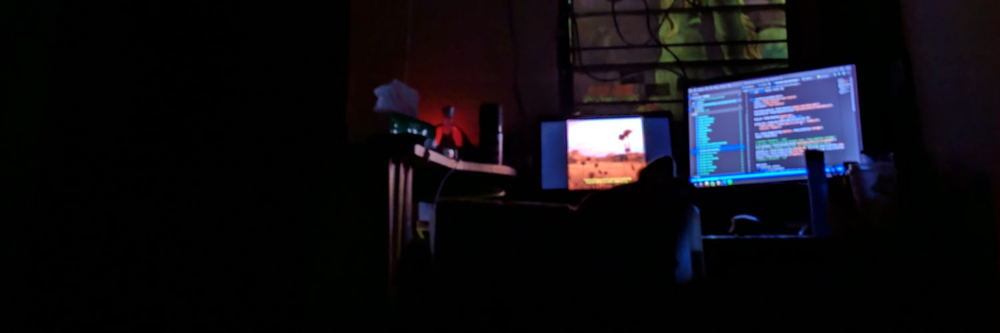
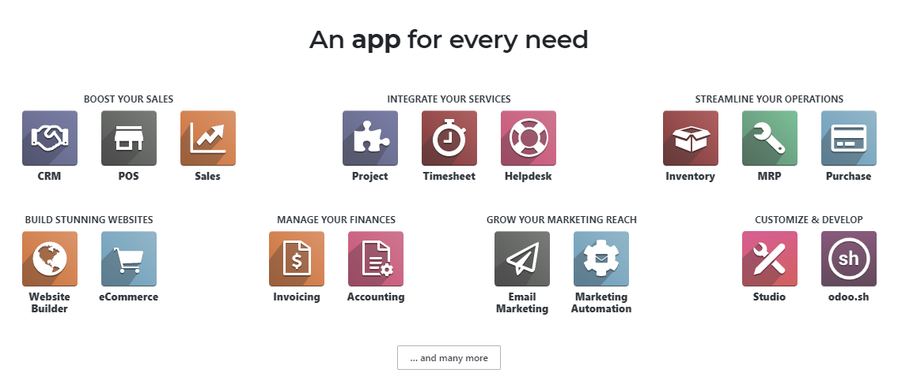
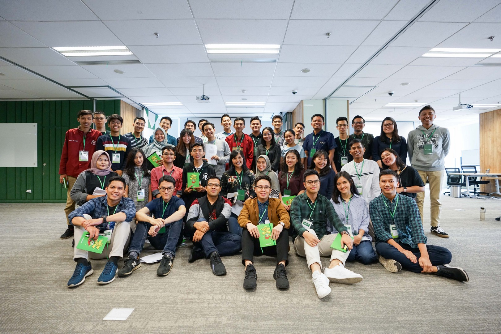

Profile

Junior Softwere Engginer at Kompas Gramedia which handles software development especially ERP (enterprise resource planning) using Odoo development framework.
With the basic programming python and javascript in it I have 1 year of experience in developing odoo software.
Not only the development of the odoo software, I also participated in a number of online courses for my interest in cloud computing,
data analyst or data engginer. And the last time I took the course Google Cloud Architecting with Google Kubernetes Engine Specialization at coursera.
Experince
since graduation from college, I have experienced experience in the information technology software industry environment,
along with my experience in the past year.
Junior Software Engginer Kompas Gramedia
July 2019 - Now

For 11 months now I am still working on the Gramedia Compass as a junior software engineer with Jobdesk developing Odoo software.
Odoo development here involves changing the modules in odoo by following the business processes of the company. The modules that I have engineered include POS (points of sale), Payroll, CRM, Accounts, WMS and create a new module that is banquet.
Odoo itself is made with several programming languages namely javascript, python, and others
Tokopedia Product Academy
April 2019

Intensive 5-days development program that will offer final year students with IT, Design and Business background the opportunity to learn in tech company by giving them intensive “product” training, an exposure to how Tokopedia’s businesses operating as well as hands-on how to solve real problem through developing product.
Broadly speaking, the training is divided into 3, first the Class Class, here like lectures there is theory and practice, some of the material discussed is Scrum, Lean PD: MVP, Product Overview and others
Education
The last formal education that I had taken was as a university student at Diponegoro Faculty of Engineering majoring in computer engineering. for 4 years I studied basic computer science, computer networks, embeded systems and multimedia. Not only the material, but with lab work directly.